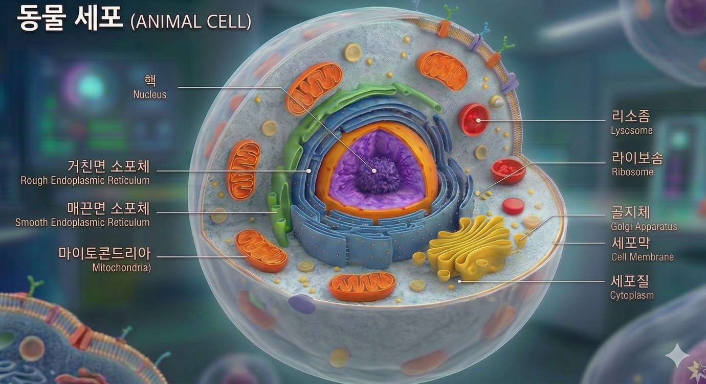

🔬 사라진 인슐린: 세포 내 배달 사고
사건 발생: 췌장 세포에서 생성된 '인슐린' 단백질이 혈관으로 나가지 못하고 세포 내부에서 실종되었습니다! 인슐린은 원래 세포 밖으로 분비되어야 하지만, 어딘가에서 배송 사고가 발생한 것으로 보입니다.
[수사 방법] 그림 주변의 소기관 이름을 클릭하여 확대 수사하세요. 퀴즈를 풀면 단서를 얻을 수 있습니다. 모든 단서를 모아 범인(사고가 발생한 소기관)을 지목하세요!
[수사 기록 현황]

💬 수사 보고 및 문의